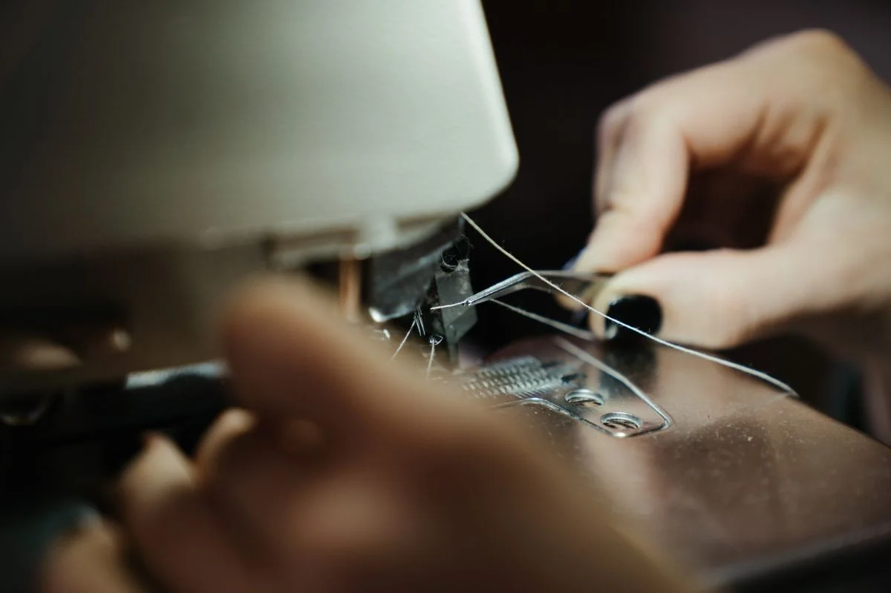
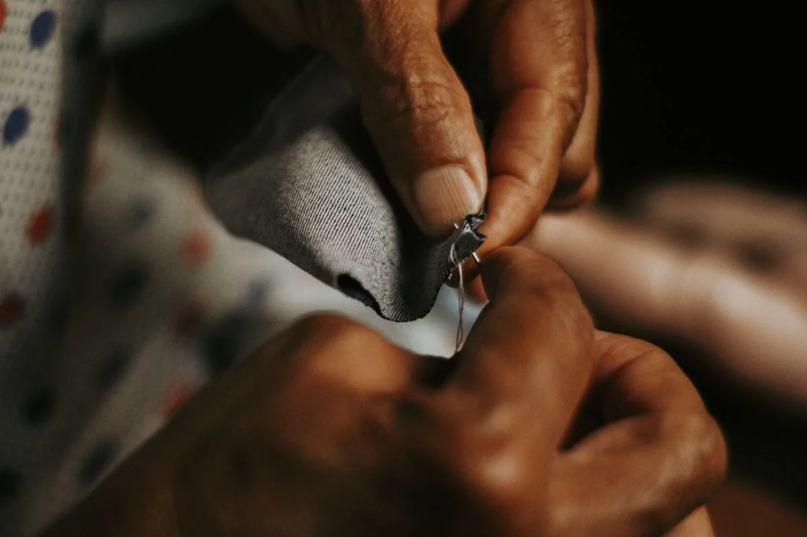

Ajustes de caimento
Barras, cintura e comprimento: possibilidades avaliadas conforme a modelagem e o tecido da peça.
CUIDAR TAMBÉM É TRANSFORMAR
Um ajuste no caimento. Um reparo naquela peça favorita. A costura é um convite para continuar usando o que faz sentido para você.
Quero cuidar de uma peça Descobrir as possibilidadesMenos descarte.
Mais vida no guarda-roupa.

01 — O QUE PODEMOS FAZER
Cada tecido tem seu tempo. Cada peça, suas possibilidades. A avaliação vem antes de qualquer combinação.
Barras, cintura e comprimento: possibilidades avaliadas conforme a modelagem e o tecido da peça.
Costura aberta, botão solto ou pequeno reparo. A viabilidade depende do estado da roupa.
Revisão de acabamentos e pequenos detalhes para recuperar o prazer de vestir uma peça.
Tem uma ideia de transformação? Conte o que imagina para avaliarmos o que é possível.

Catálogo demonstrativo local. Orçamento e prazo são combinados pelo WhatsApp.
02 — UM OLHAR MAIS DE PERTO
Texturas, linhas e gestos que fazem parte do universo da costura. Explore as referências.
Fotos de banco selecionadas pelo assunto. Não são um portfólio de clientes nem comparações de antes e depois.
6 fotografias
03 — DO PRIMEIRO OLÁ AO ÚLTIMO PONTO
Escolha o tipo de cuidado e descreva sua ideia. Se quiser, envie fotos na conversa.
Tecido, acabamento e estado da roupa precisam ser avaliados. Uma prova pode ser necessária.
Valor, prazo e forma de entrega são definidos no atendimento. Nada é confirmado automaticamente.
04 — VAMOS DAR O PRIMEIRO PONTO?
Prepare uma mensagem e continue a conversa no WhatsApp. Sem cadastro e sem compromisso de contratação.
Uma foto ajuda a começar.
A avaliação da peça é que
define o que pode ser feito.
Esta é uma demonstração. O WhatsApp abre o atendimento da MOSS Digital para conversar sobre este modelo de site, não um ateliê em funcionamento.
ANTES DE CONVERSAR
Nem sempre. Tipo de tecido, margem de costura, modelagem e estado da peça influenciam. A possibilidade é confirmada somente após avaliação.
Este modelo não promete valores ou prazos fixos. Descreva sua necessidade e combine os detalhes no atendimento, antes de autorizar o serviço.
Não. Ponto & Ajuste é uma marca fictícia para demonstrar este site. As fotos são de banco e ilustram costura. Em um projeto real, podem ser substituídas por fotos autorizadas do negócio.
A vitrine e a preparação da mensagem funcionam sem banco. A integração opcional com Supabase carrega os serviços publicados e oferece um painel autenticado para o responsável registrar pedidos recebidos pelo WhatsApp. A configuração está explicada no manual de instalação.